Relacionarnos es más complejo de lo que pensamos y definitivamente poder hacerlo de manera madura y sana es todo un desafío…
Reflexionemos juntos sobre tips y cositas que nos han ayudado a vincularnos y no morir en el intento 😂

Ultimos Episodios
No les pasa que a veces no tienen muchas ganas de hablar temas profundos? A nosotras nos pasa
Les traemos este episodio sin ningún tema en particular, teníamos ganas de improvisar así que nos pusimos a leer diferentes tuits y opinar al respecto, esperemos les guste👀
Cuantas veces…nos han dicho, o hemos escuchado de cosas que asumimos como comunes y hoy en día nos damos cuenta que no es tan normal como pensábamos? 🤔 En este episodio hablamos de lo que no es “normal” reflexiona con nosotras👇🏼👇🏼
Muchas veces no sabemos como llevar ni cómo actuar durante el duelo de terminar una relación… En este episodio les compartimos desde nuestras perspectivas y experiencias cómo sobrellevarlo y cosas que nos funcionaron para sanar✨ ¡Esperamos les ayude!